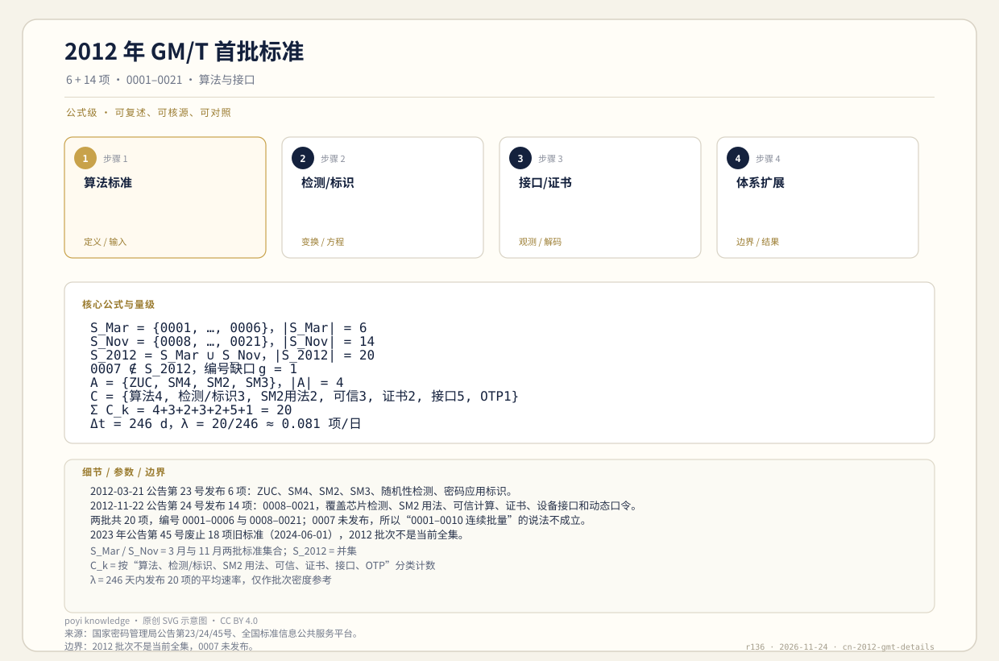

原理与机制
中国密码史：2012 年 GM/T 首批标准（First GM/T Standards Batch (2012)）。2012 年是商用密码标准化的第一个密集批次年，但不是一份“0001 到 0010”的连续清单。3 月 21 日公告第 23 号发布 6 项：GM/T 0001-2012《祖冲之序列密码算法》、0002《SM4 分组密码算法》（原 SMS4）、0003《SM2 椭圆曲线公钥密码算法》、0004《SM3 密码杂凑算法》、0005《随机性检测规范》、0006《密码应用标识规范》，均自公布之日起实施。11 月 22 日公告第 24 号再发布 14 项：0008《安全芯片密码检测准则》、0009《SM2 密码算法使用规范》、0010《SM2 密码算法加密签名消息语法规范》，以及 0011–0013 可信计算、0014–0015 证书、0016–0020 密钥/设备/服务接口、0021 动态口令。两批并集是 S_2012，20 项；编号集合是 0001–0006 与 0008–0021，0007 不在其中。按功能分类，4 项算法、3 项检测/标识、2 项 SM2 用法、3 项可信计算、2 项证书、5 项接口、1 项 OTP，合计 20。3 月 21 日到 11 月 22 日相隔 246 天，平均批次密度约 0.081 项/日。这个密度只说明发布节奏，不说明标准质量或实施程度。

为什么重要
这 20 项标准解决的是“算法有了，怎么用、怎么测、怎么接”的问题。四个算法标准把 ZUC、SM4、SM2、SM3 从研究成果变成行业可引用的规范；随机性检测和密码应用标识让产品检测和互操作有了共同语言；11 月批次的芯片检测、SM2 用法、证书、设备接口和动态口令，则把算法接到芯片、证书系统、密钥设备和业务系统上。没有这批标准，商用密码产品只能各自解释算法参数和接口，检测机构也难以给出统一结论。它的价值不是“发布了多少项”，而是把算法、检测、接口三个层面接成一条可执行的标准链。
应用与实例
使用这批标准时，要先按编号查类别：0001–0004 是算法；0005 是随机性检测；0006 是标识；0008 是芯片检测；0009–0010 是 SM2 用法与消息语法；0011–0013 是可信计算；0014–0015 是证书；0016–0020 是密钥、设备和服务接口；0021 是动态口令。然后查它是否仍有效：2023 年公告第 45 号已废止 18 项旧标准，部分 2012 标准被 2023 版替代。这张分类表也解释了“标准链”的用法：算法标准定义原语，检测标准定义合格性，接口标准定义产品之间怎么调用。选型时不能只查一个算法编号，还要查对应的使用规范、消息语法、设备接口和检测准则。
边界与攻击面
2012 批次的第一个边界是版本：它不是当前全集。2023 年 12 月 4 日公告第 45 号发布 25 项新标准，同时废止 18 项旧标准，自 2024 年 6 月 1 日起失效；被废止的包括 0006、0009、0010、0011、0014–0021 等 2012/2014 标准。引用 2012 标准时必须同时查后继版本。第二个边界是标题：旧卡片写“GM/T 0001-0010 批量发布”，但 0007 从未出现在两份公告中，0008–0010 属于 11 月批次，不是 3 月批次。把它写成连续 0001–0010 会掩盖编号缺口和两批发布的事实。第三个边界是“发布”不等于“实施”：标准文本存在，不代表每个产品都已按它检测或通过认证。
历史与背景
2012 年 3 月 21 日，国家密码管理局公告第 23 号发布 6 项算法与基础标准；2012 年 8 月 21 日，全国标准信息公共服务平台备案清单登记了 0005、0006、0008、0009、0010 等记录；2012 年 11 月 22 日，公告第 24 号发布 14 项接口、证书、可信计算和动态口令标准。2023 年 12 月 4 日，公告第 45 号发布 25 项新标准（2024-06-01 实施），并废止 18 项旧标准（同日失效）。这说明 2012 批次完成了“从算法到接口”的第一次体系化，但不是终点；标准体系随后进入持续修订和扩展阶段。
逐步示例与核验
事件时间线模型
背景 → 过程 → 结果 → 争议。背景写此前技术/制度；过程写可核参与者与时间；结果写后续标准、机器、课程或政策；争议写二手叙述与一手材料的差距。
参考出处
- Wikipedia search entry for 2012 年 GM/T 首批标准. https://zh.wikipedia.org/w/index.php?search=2012%20%E5%B9%B4%20GM%2FT%20%E9%A6%96%E6%89%B9%E6%A0%87%E5%87%86
- 《密码简史：穿越远古 展望未来》（杨义先、钮心忻，电子工业出版社，2020，ISBN 9787121398711）. https://book.cppinfo.cn/Encyclopedias/home/index?id=3730464